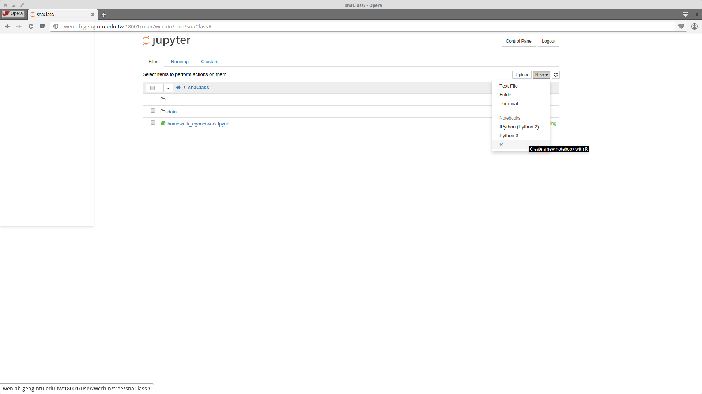
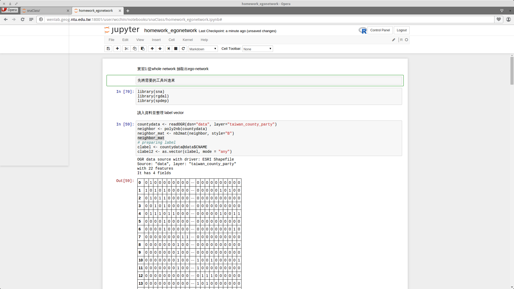
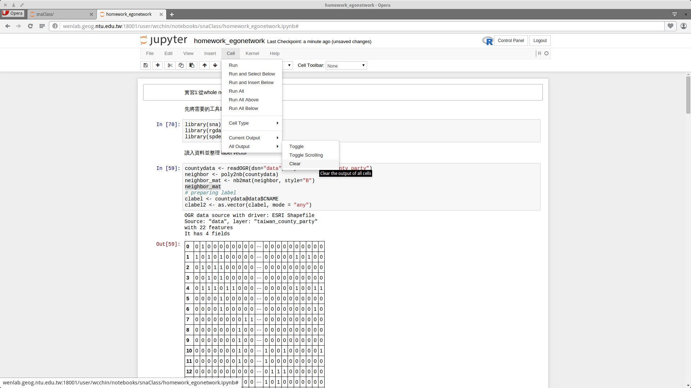
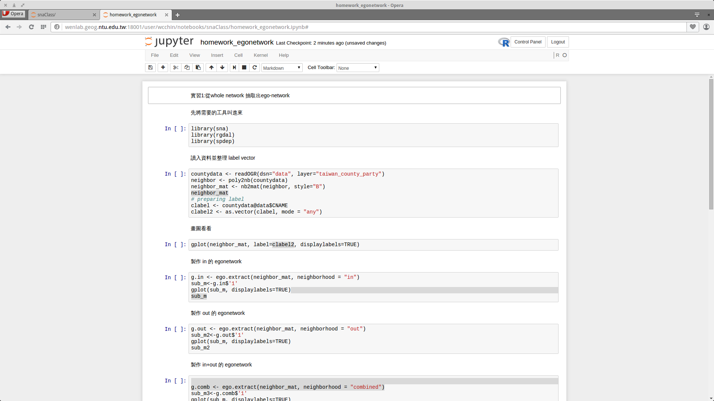
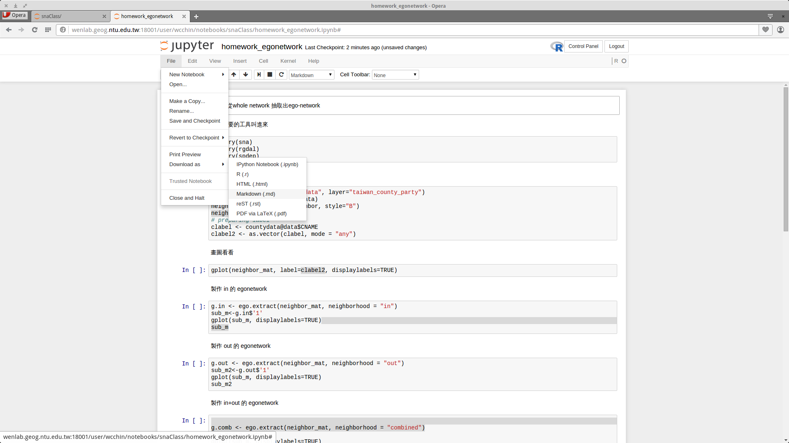
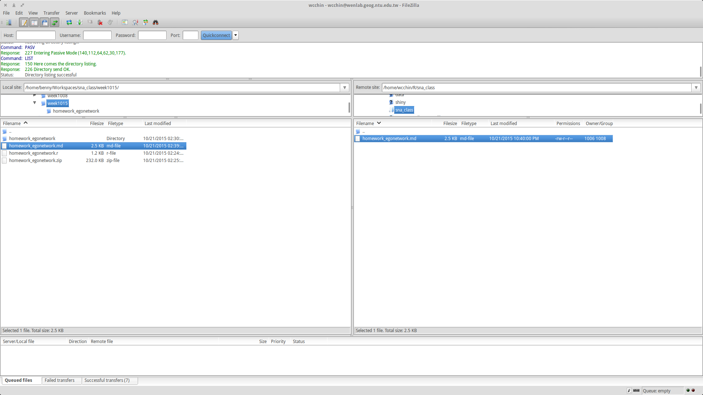
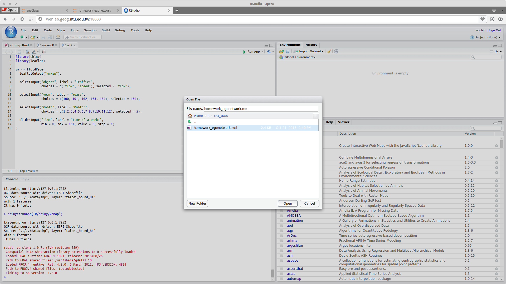
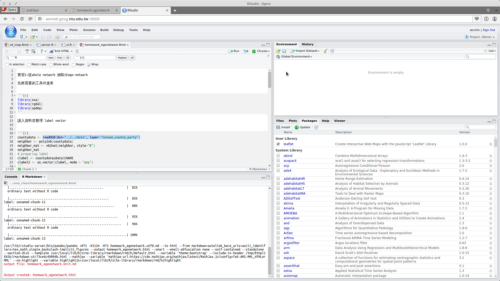
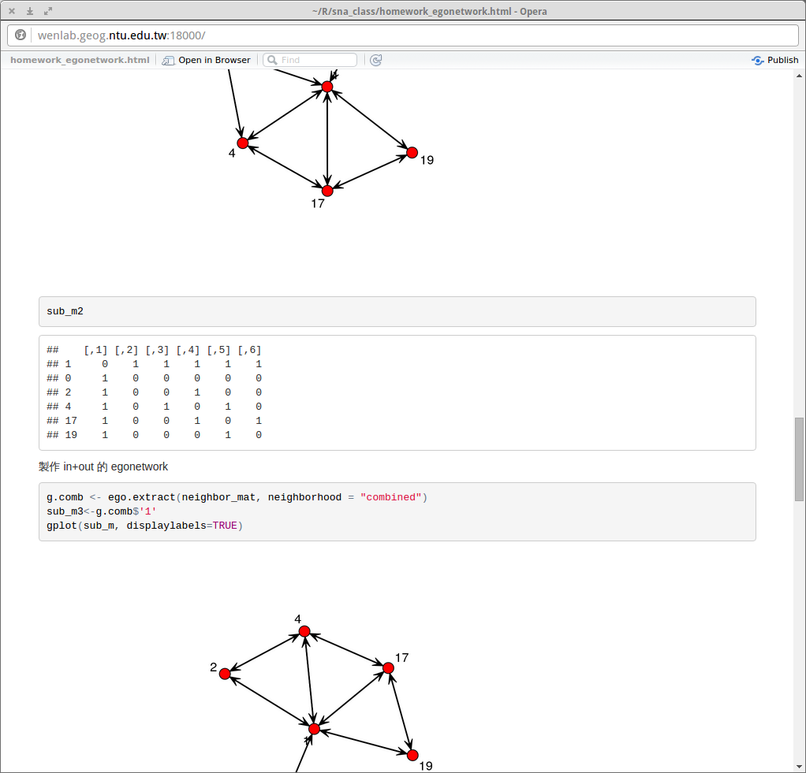

關於 asus server 上安裝的 jupyterhub 以及 rstudio-server
這篇文章會說明：
1. 如何用 jupyterhub 寫網絡課的作業，同時作筆記說明
2. 完成後，透過 rstudio-server 的 Rmarkdown 轉成 .html。
如何用 jupyterhub 寫程式，並作筆記
- 登錄 http://wenlab.geog.ntu.edu.tw:18001
- 在適當的地方，如 /snaClass ，New 一個 R notebook 
- 在這文件中開始寫 R 的程式，如叫進 library、計算、畫圖、寫 function 等。用 Shift+enter 會執行當前的 cell，並進入下一個，或 ctrl+enter，會執行當前 cell 並停留在同一個 cell。

- 當要放說明的時候，在需要放的地方開一個 cell，在上面原來是 Code 的地方，改選程 markdown，然後以 markdown 語法寫說明 
- 當都準備完成了，作業寫完了，要輸出之前，先將 output 的東西先砍掉  
- 透過 File-->Download as--> Markdown(.md) 輸出，下載到本機端 
透過 rstudio-server 轉 rmarkdown 並輸出 html
- 先把本機端的東西，透過 filezilla 上傳到自己的空間裏 
- 登錄 http://wenlab.geog.ntu.edu.tw:18000
- 打開剛上傳的檔案，並轉存成 rmd 檔 
- 需要將 ```R 改成 ```{r}，用 replace--> all
- 資料所在位置要調整好： ../ 是上一個資料夾的意思 ../../data 是前兩層資料夾下的 data 資料夾 
- 跟單機版一樣，按 knit html
- 存檔 html，完成。 